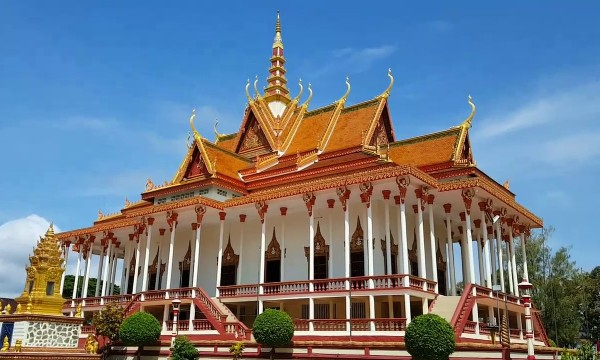

សូមស្វាគមន៍មកកាន់តំបន់ទេសចរណ៍កម្ពុជា
វិហារសសរមួយរយ គឺជាវត្តមួយដែលគេស្គាល់យ៉ាងទូលំទូលាយសម្រាប់ប្រវត្តិសាស្ត្រ របស់ខ្លួននិងជាកន្លែងសក្ការៈបូជាមួយសម្រាប់ប្រជាជននៅខេត្តក្រចេះ។ វិហារសរសាមយួយមានន័យថា "ប្រាសាទដែលមានជួរឈរ 100" ត្រូវបានសាងសង់ដំបូងនៅសតវត្សទី 16 ដោយព្រះបាទច័ន្ទរាជឆា។ វត្តនេះរាប់បញ្ចូលខ្ទមឈើចំនួន 100 ដើម្បីរំលឹកការចងចាំរបស់កូនស្រីរបស់គាត់ឈ្មោះវ័រសុភ័ក្ត្រ។ វត្តនេះមានទីតាំងស្ថិតនៅក្នុងក្រុងសម្បូរដែលមានចម្ងាយ 36 គីឡូម៉ែត្រពីក្រុងក្រចេះ។ ដើម្បីទៅទីនោះអ្នកត្រូវជិះមាត់ទន្លេ N R 7 ចាស់តាមបណ្តោយមាត់ទន្លេ 24 គីឡូម៉ែត្រទៅភូមិសែនស្នានហើយបន្តឆ្ពោះទៅទិស 12 គីឡូម៉ែត្រតាមដងទន្លេឆ្ពោះទៅសម្បូរ។
ក្នុងសតវត្សទី 16 ស្ដេចច័ន្ទរាជាបានសោយរាជ្យនៅទូទាំងប្រទេសហើយបានរស់នៅក្នុងអតីតរាជធានីនៃឧដុង្គ។ គាត់មានកូនស្រីឈ្មោះវរាក់ភ័ក្ត្រ។ នៅពេលដែលកូនស្រីមានជំងឺគាត់បានបង្គាប់ឱ្យបាវបម្រើរបស់គាត់អញ្ជើញ អ្នកដឹកនាំវត្តព្រះពុទ្ធសាសនានៅវត្តនាគសែនដែលមានទីតាំងនៅឃុំជ្រោយបន្ទាយស្រុកព្រែកប្រសានដើម្បី ព្យាបាលជំងឺកូនស្រីរបស់គាត់។ ខណៈពេលដែលប្រមុខនៃព្រះសង្ឃបានអវត្តមានពីវត្តព្រះអង្គនិនថុនជាសិស្ស ដែលគាត់ចូលចិត្តរៀនវិជ្ជាវៀតមពណ៌សបានសំងាត់ហើយបន្ទាប់មកគាត់ត្រូវបានផ្លាស់ប្តូរទៅជាសត្វក្រពើដែល មានឈ្មោះថាក្រពើនននន។ ពេលគ្រូបង្រៀនត្រឡប់មកវិញលោកណែនធុនបានក្លាយជាក្រពើហើយមិនអាចក្លាយជាមនុស្ស។ បន្ទាប់មកគាត់តែងតែយកគ្រូរបស់គាត់ដាក់ខ្នងដើម្បីព្យាបាលកូនស្រីរបស់ស្តេច។ ថ្ងៃមួយសត្វក្រពើដ៏ធំមួយឈ្មោះសុពណ៌កាឡីដែលចង់ប្រកួតប្រជែងជាមួយនឿន ថុនបានបញ្ឈប់នេនធន់ខណៈពេលដែលគាត់កំពុងដឹកគ្រូរបស់គាត់នៅលើផ្លូវត្រឡប់មកវិញពីព្រះបរមរាជវាំង។ ក្រពើទាំងពីរក្រោយមកបានចាប់ផ្តើមប្រយុទ្ធគ្នា។ ខណៈដែលនេនធន់មិនអាចរកវិធីដើម្បីជួយសង្រ្គោះ គ្រូរបស់គាត់បានគាត់សម្រេចចិត្តលេបគ្រូរបស់គាត់ចូលទៅក្នុងពោះរបស់គាត់ដើម្បីរក្សាសុវត្ថិភាពសម្រាប់ មួយរយៈពេល។ ការប្រយុទ្ធគ្នាមានរយៈពេល 3 ថ្ងៃនិង 3 យប់ហើយទីបំផុតសុពណ៌កាឡីត្រូវបានកម្ចាត់ ហើយបន្ទាប់មកបានស្លាប់ហើយភ្លាមៗនោះបានប្រែទៅជាភ្នំមួយដែលបច្ចុប្បន្នត្រូវបានគេហៅថា Sopor Kaley ។ នៅពេលនេនធន់បានបណ្តេញគ្រូបង្រៀនរបស់គាត់ពីក្រពះគាត់ត្រូវបានគេជឿថាស្លាប់។ ណែនធុនមានការសោកស្តាយយ៉ាងខ្លាំងហើយបានប្តេជ្ញាចិត្តសម្លាប់កូនស្រីរបស់ព្រះមហាក្សត្រពីព្រោះ គាត់គិតថាគាត់គឺជាមូលហេតុនៃការស្លាប់របស់គ្រូរបស់គាត់។ ណែនធុនហែលទឹកស្ងប់ស្ងាត់ហើយស្រាប់ តែលេបកូនស្រីរបស់ស្តេចដែលកំពុងលេងនៅកំពង់ផែព្រះបរមរាជវាំង។

© រក្សាសិទ្ធិគ្រប់យ៉ាងដោយ Visit Cambodia tours ឆ្នាំ២០១៨
អាសយដ្ឋាន
អគារលេខ ៣០៨ មហាវិថីព្រះមុន្នីវង្ស
សង្កាត់បឹងរាំង ខណ្ឌដូនពេញ
Visit Cambodia tours ជាគេហទំព័រ សម្រាប់ធ្វើការស្វែងរកកន្លែងកម្សាន្ត និង បញ្ជាក់បន្ថែមនៅពត័មានរបស់ខេត្ត។